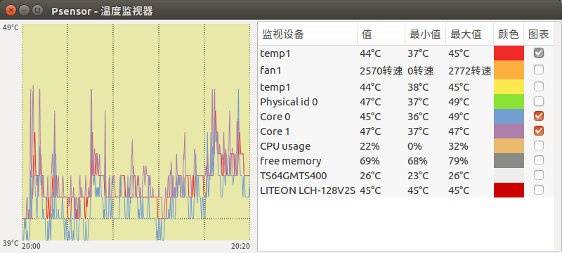
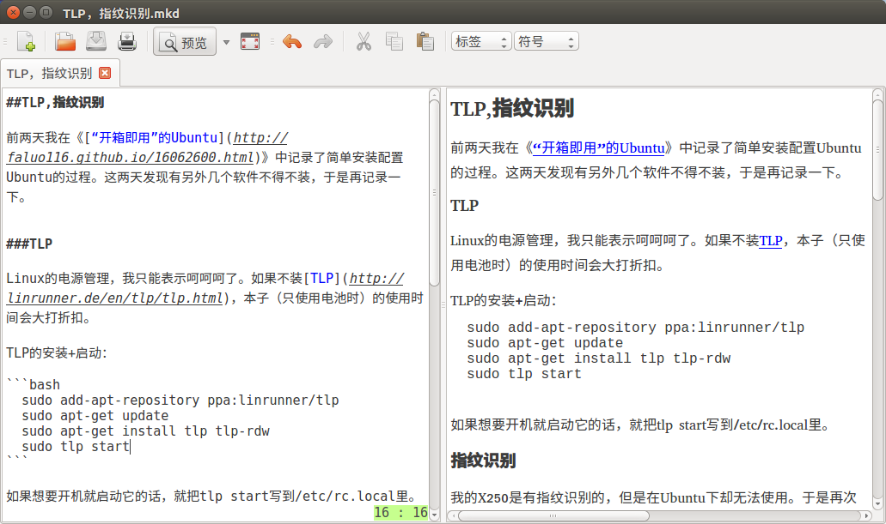

TLP,指纹识别与其它
前两天我在《“开箱即用”的Ubuntu》中记录了简单安装配置Ubuntu的过程。这两天发现有另外几个软件不得不装，于是再记录一下。
TLP
Linux的电源管理，我只能表示呵呵呵了。如果不装TLP，本子（只使用电池时）的使用时间会大打折扣。
TLP的安装+启动：
sudo add-apt-repository ppa:linrunner/tlp
sudo apt-get update
sudo apt-get install tlp tlp-rdw
sudo tlp start
指纹识别
我的X250是有指纹识别的，但是在Ubuntu下却无法使用。于是再次通过百度解决：
sudo add-apt-repository ppa:fingerprint/fprint
sudo add-apt-repository ppa:fingerprint/fingerprint-gui
sudo apt-get install fingerprint-gui policykit-1-fingerprint-gui libbsapi
温度检测
可能是在用OSX时养成的习惯吧，总是想随时查看机器的温度。在Ubuntu下可以用Psensor。安这个软件比较方便，在软件中心中能搜到，直接安装就好了。

Markdown编辑器
目前我找到的Linux下最好用的markdown编辑器是ReText，实时预览窗口可以关掉（虽然我平时都开着），功能简单够用。同样在软件中心搜下就能找到了。
 (Fin.)